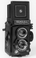

海鸥 4A-107 是一款中画幅双镜头反光镜取景照相机，使用120胶卷。取景镜头为75/2.8（3片3组），摄影镜头为75/3.5（4片3组）。
我的是4b。当年是攒了3年的零花钱买的，第一台属于自己的相机，用了20年后才退休换135机器。现在虽然再也不会去用她了，但是仍然是自己最美好的回忆！
简单，结实。
大家都知道的。
没有4B我就放在这里了，家里老一辈用的机器
全金属，拿在手里那是没的说 看着漂亮。
。。。。。。
海鸥4A—107双反在当年可以算是不错的照相机，虽然不能与国外的名牌相比，不过我现在还有一台全新的，非常喜欢。
感觉不错，全机械手动，也能出好照片。
可惜胶片时代已经快结束了。
还在工作 嗯 这里没有老4A 我就评在这里了 我的是中期的
海鸥是小时候的梦想 嗯 好歹是台双反 样子还挺招人喜欢 4A是海鸥双反里质量比较好的 质量不错 至少我的是 摇把过片 不会忘记 便宜
画质和雅西卡什么的当然不能比 现在塑料成分太多 成色好的难找